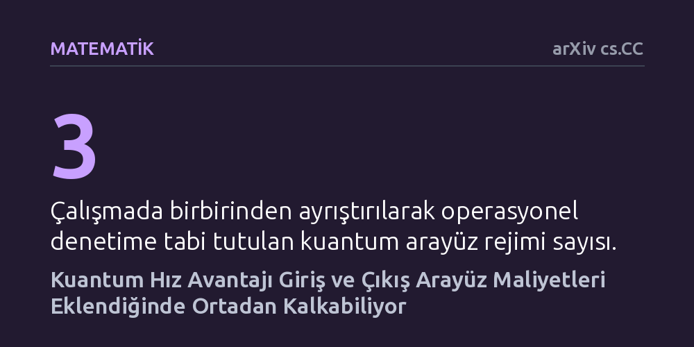

MATEMATIK · arXiv cs.CC · 2026-09-11
Araştırmacılar, kuantum algoritmalarındaki teorik hız avantajının veriye erişim ve çıktı alma maliyetleri dahil edildiğinde sürüp sürmediğini inceledi. Analiz, topolojik veri analizinde arayüz maliyetleri hesaba katıldığında kuantum üstünlüğünün kaybolduğunu ve klasik yöntemlerin benzer başarım sunduğunu gösterdi.
Kuantum bilgisayarların her alanda klasik bilgisayarlardan hızlı olacağı varsayımının, veri hazırlama ve okuma aşamaları dikkate alındığında her zaman gerçeği yansıtmadığını gösterir.

Kuantum bilgisayarların belirli problemleri klasik bilgisayarlardan katbekat hızlı çözeceği sıkça dile getirilir. Ancak algoritmik bir çekirdeğin teorik olarak hızlı çalışması, problemin veriyi yükleme anından nihai cevabı alma anına kadar bir bütün olarak daha hızlı çözüleceği anlamına gelmez. Birçok kuantum algoritması, verilerin kuantum durumuna kusursuz biçimde hazırlandığını varsayar; oysa bu hazırlık adımı devasa bir zaman ve işlem maliyeti doğurabilir.
Bu makalenin ele aldığı temel soru, giriş verisinin yüklenmesi ve çıkış sonucunun okunması gibi uçtan uca tüm bileşenler hesaba katıldığında kuantum hızlanmasının gerçekten ayakta kalıp kalmadığıdır. Eğer veriyi kuantum sistemine aktarmak için gereken mekanizma, aynı verinin klasik bir algoritma tarafından da hızlıca işlenmesine olanak tanıyorsa, vadedilen kuantum üstünlüğü bir yanılsamadan ibaret kalabilir.
Araştırmacılar, kuantum ve klasik algoritmalar arasındaki etkileşimi adil bir zeminde kıyaslayabilmek için işlem geçmişine dayalı matematiksel bir kabul edilebilirlik bağıntısı tanımladı. Bu çerçevede, kuantum algoritmasına tanınan veri erişim yetkilerinin aynısı klasik tarafa da tanındığında, hangi klasik erişim modellerinin geçerli olacağı katı bir biçimde modellendi. Sisteme veri hazırlama, ara adımları üretme ve hassasiyet gereksinimlerinin getirdiği tüm ek yükler eksiksiz olarak maliyete yansıtıldı.
Yöntem, veri madenciliği ve şekil analizinde kullanılan topolojik veri analizindeki klika komplekslerinin normalize Betti sayılarını tahmin etme problemi üzerinde somutlaştırıldı. Araştırmacılar bu problemi üç farklı kuantum arayüz rejimi altında adım adım denetledi: tersinir indisli arayüzler, üyeliğe dayalı durum hazırlama modelleri ve soyut blok kodlama yapıları.
Denetim sonucunda, kuantum algoritmasının hız kazanması için gereken tersinir indisleme rutinlerinin, klasik algoritmalar için de eşdeğer verimlilikte simpleks örnekleme imkânı sağladığı görüldü. Yazarların ifadesiyle, "ilkel kuantum hızlanmaları arayüze bağlıdır" ve kuantum tarafını besleyen arayüz paketi, tek bir hesaplama kolunda klasik algoritmaların da yerel matris satırlarına hızla erişmesine ruhsat vermektedir.
Üyeliğe dayalı durum hazırlama yaklaşımı incelendiğinde ise kuantum algoritmasının yüksek bir dışlama ve ret maliyetiyle karşılaştığı saptandı. Soyut spektral arayüzlerin de ek bir hazırlık paketi olmadan bağımsız bir üstünlük üretemediği belirlendi. Dahası, somut olarak test edilen sınırlı ağ genişliğine sahip çizge ailelerinde, rasyonel sayılar üzerinden klasik matris mertebesi hesaplamalarının zaten polinom zamanda kesin sonuç verdiği ortaya kondu.
Bu bulgular, kuantum algoritmalarının başarısını değerlendirirken yalnızca çekirdek döngünün karmaşıklığına odaklanmanın yanıltıcı olduğunu açıkça ortaya koymaktadır. Giriş verisinin hazırlanması ve çıkışın klasik dünyaya aktarılması gibi arayüz sözleşmeleri hesaba katılmadığında, teoride var görünen üstünlükler pratikte klasik algoritmalar karşısında hızla eriyebilmektedir.
Sonuç olarak çalışma, kuantum algoritmaları geliştiren araştırmacıları uçtan uca tüm sistem maliyetlerini baştan şeffaf biçimde tanımlamaya çağırmaktadır. Kuantum teknolojisinin nerede gerçek bir üstünlük sağlayacağını anlamak, veri arayüzlerinin klasik yöntemlere de ne kadar kapı araladığını tarafsızca ölçmekten geçmektedir.